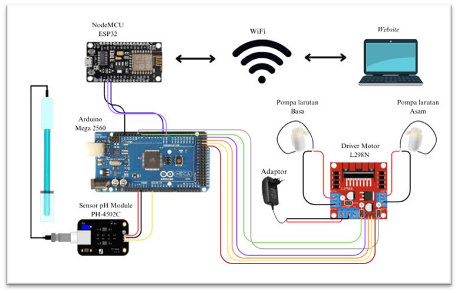
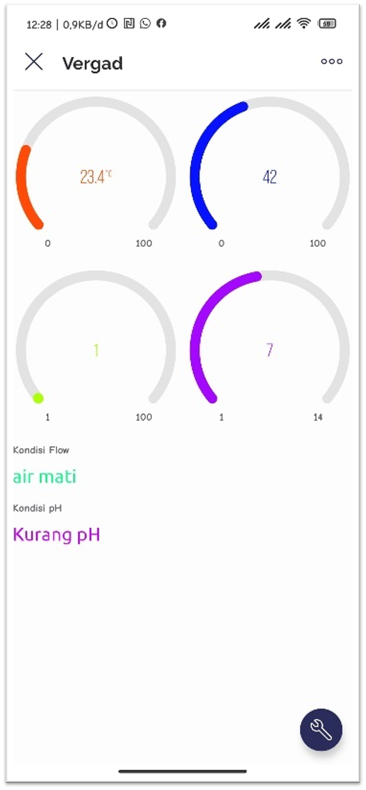

Achmad Nur Aqmali
Informatics Engineering Graduate | Front-End Developer | IoT Enthusiast
About Me
I am a passionate Informatics Engineering graduate focusing on front-end development and IoT. With experience in developing smart agriculture IoT systems and optimizing UI/UX, I strive to create efficient and user-friendly solutions.
Contact
Email: achmadnuraqmali@gmail.com
Phone: 085708676138
Projects
Smart Hydroponics System - Implemented Kalman Filter to stabilize pH sensor data.
Circuit Design
Interface

Smart Hydroponics System - Implemented Kalman Filter to stabilize pH sensor data.
Communication Topology

Interface on Blynk APP
Certifications & Awards
Riset Kompetitif Mahasiswa - IoT Vertical Garden Research (2023)
HTML & CSS Training - Digital Talent Scholarship (2025)
JavaScript Training - Digital Talent Scholarship (2022)